Which inside out emotion are you? SADNESS DISGUST JOY ANGER FEAR JOY The most important stage happens when you realize mess is just part of a life well lived and the clean up can actually be pretty easy. #JOYFIL #INTERESTED #PLAYFUL#CONFIDENT #LOVING #SENSITIVE #COURAGEOUS #HOPEFUL 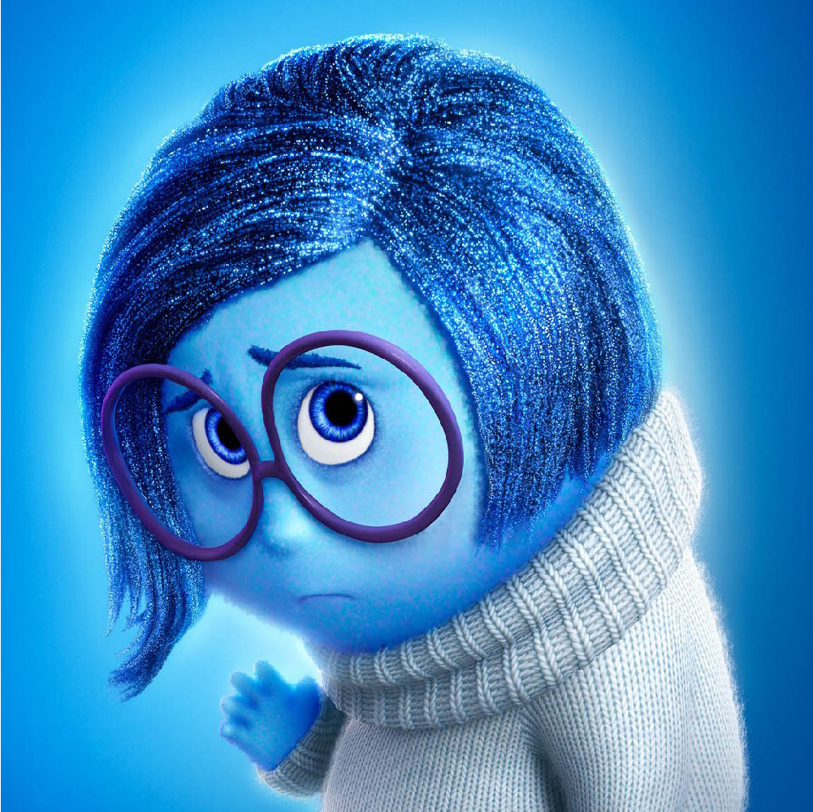 SADNESS Your fear then turns into sadness as you think about the possibility you've lost your fabrics, surfaces and other possessions to the mess. #SAD #BORED #SLEEPY #UNHAPPY #IGNORED #GUILTY #LONELY #ALONE 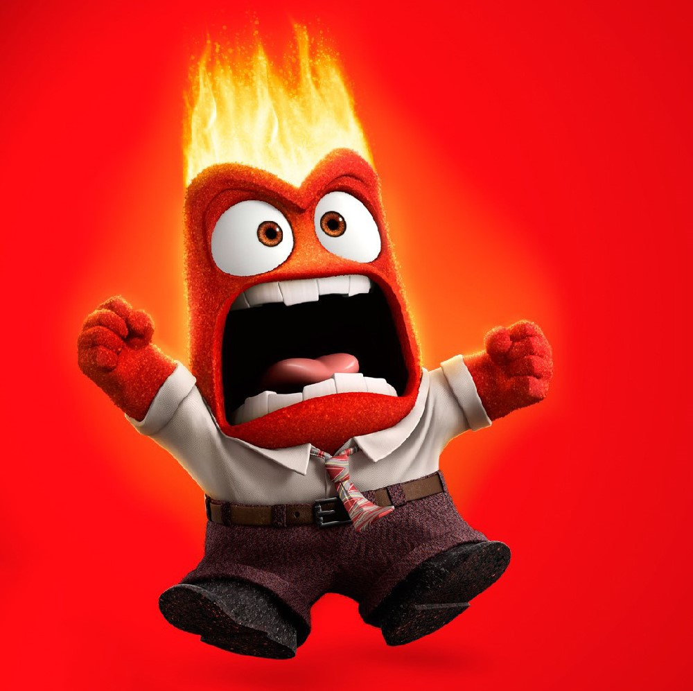 ANGER This instinctual first stage of mess often reveals itself through the use of colorful language, yelling and gesticulating widly. #MAD #JEALOUS #EMBRASSED #FURIOUS #IRRITATED #WITHDRAWN #FRUSTRATED #SKEPTICAL 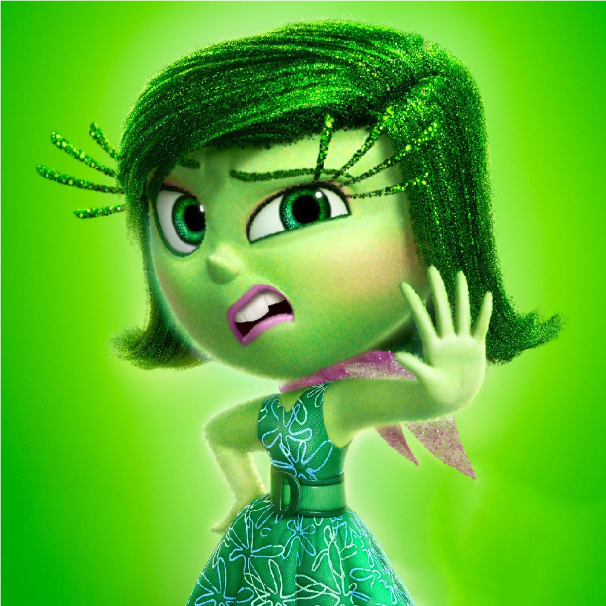 DISGUST Once anger has subsided you enter the disgust phase, characterized by an increased sensitivity to the sight and smell of the mess. #AWFUL #DISAPPOINTED #HUDGEMENTAL #HESITANT #REVOLTED #LOATHING 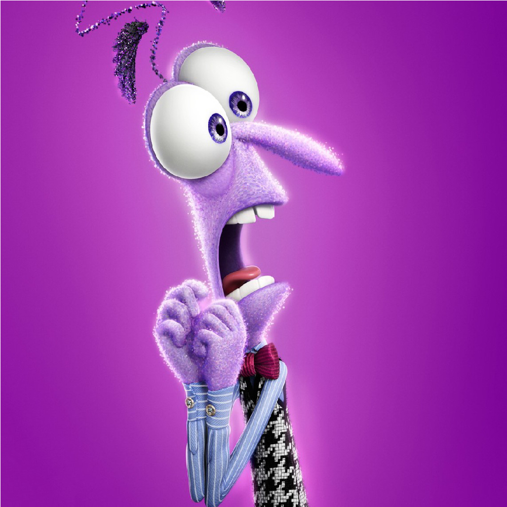 FEAR After disgust has fully sunk in, you become irrationally afraid of the mess. You want to run, hide and wait until somehow it takes care of itself. #HUMILIATED #REJECTED #WORTHLESS #INSECURE #ANXIOUS #SCARED
JOY The most important stage happens when you realize mess is just part of a life well lived and the clean up can actually be pretty easy. #JOYFIL #INTERESTED #PLAYFUL#CONFIDENT #LOVING #SENSITIVE #COURAGEOUS #HOPEFUL
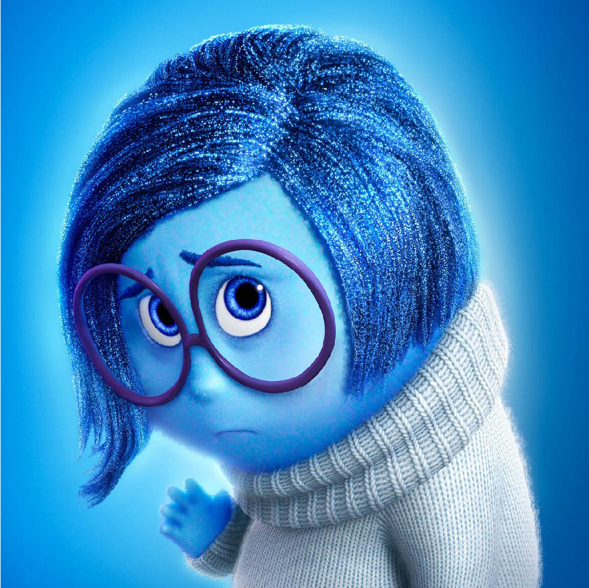 SADNESS Your fear then turns into sadness as you think about the possibility you've lost your fabrics, surfaces and other possessions to the mess. #SAD #BORED #SLEEPY #UNHAPPY #IGNORED #GUILTY #LONELY #ALONE
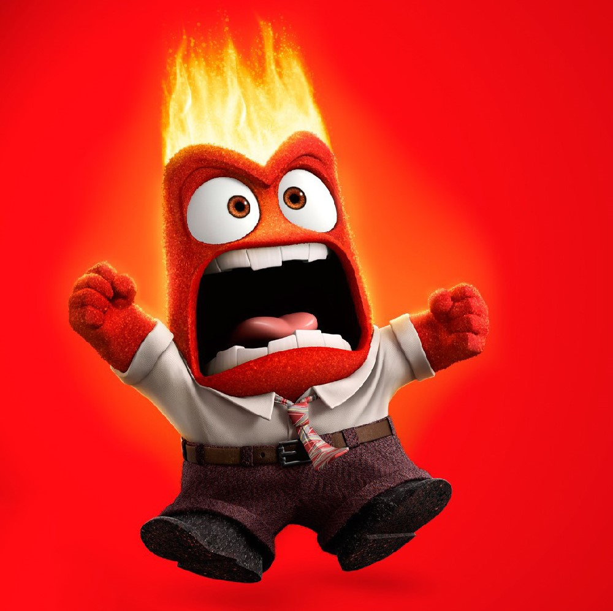 ANGER This instinctual first stage of mess often reveals itself through the use of colorful language, yelling and gesticulating widly. #MAD #JEALOUS #EMBRASSED #FURIOUS #IRRITATED #WITHDRAWN #FRUSTRATED #SKEPTICAL
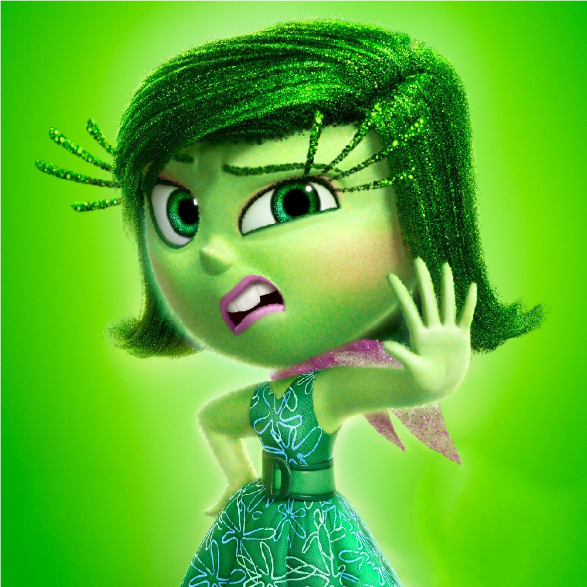 DISGUST Once anger has subsided you enter the disgust phase, characterized by an increased sensitivity to the sight and smell of the mess. #AWFUL #DISAPPOINTED #HUDGEMENTAL #HESITANT #REVOLTED #LOATHING
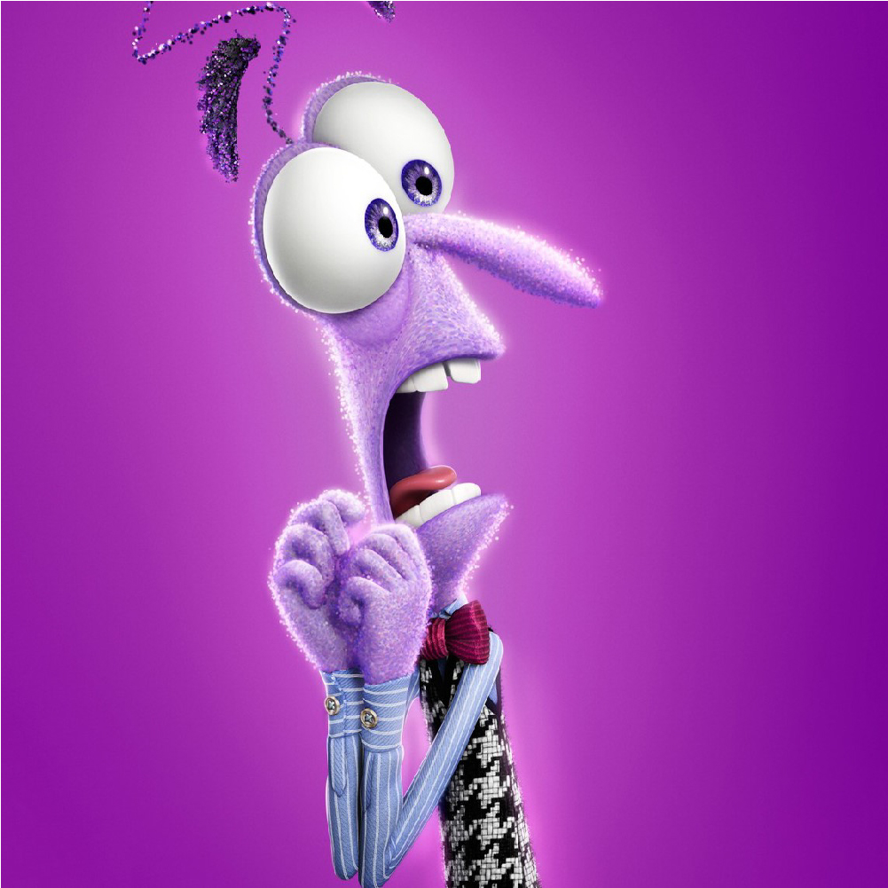 FEAR After disgust has fully sunk in, you become irrationally afraid of the mess. You want to run, hide and wait until somehow it takes care of itself. #HUMILIATED #REJECTED #WORTHLESS #INSECURE #ANXIOUS #SCARED

 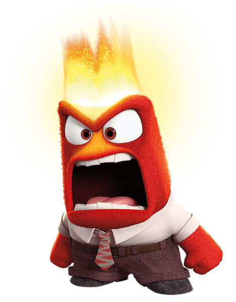
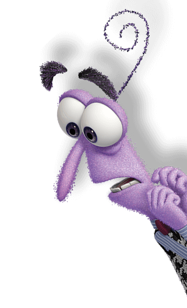
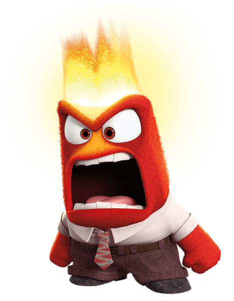
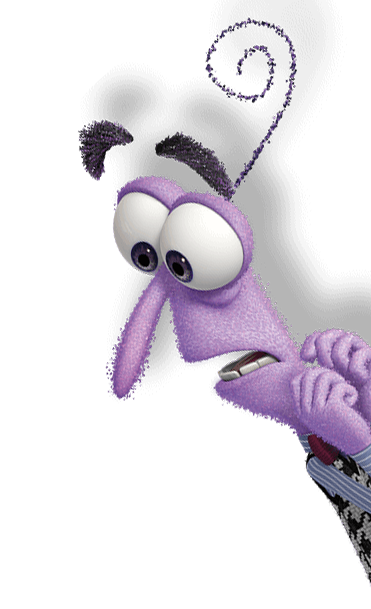
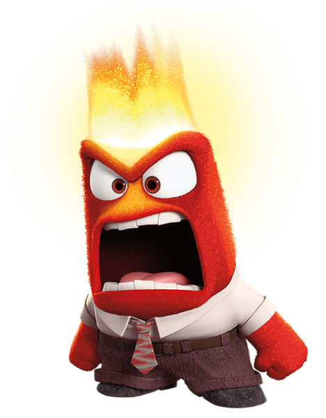
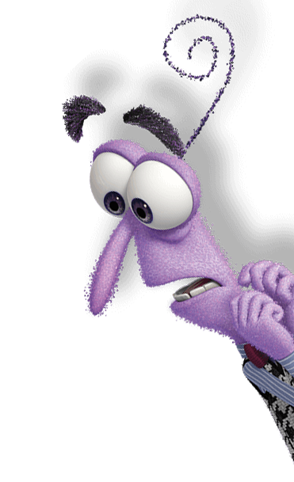
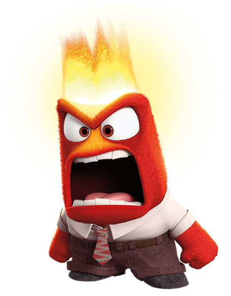
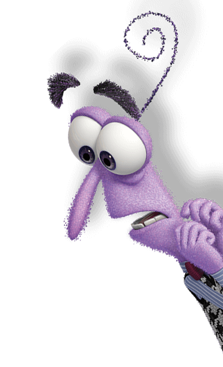